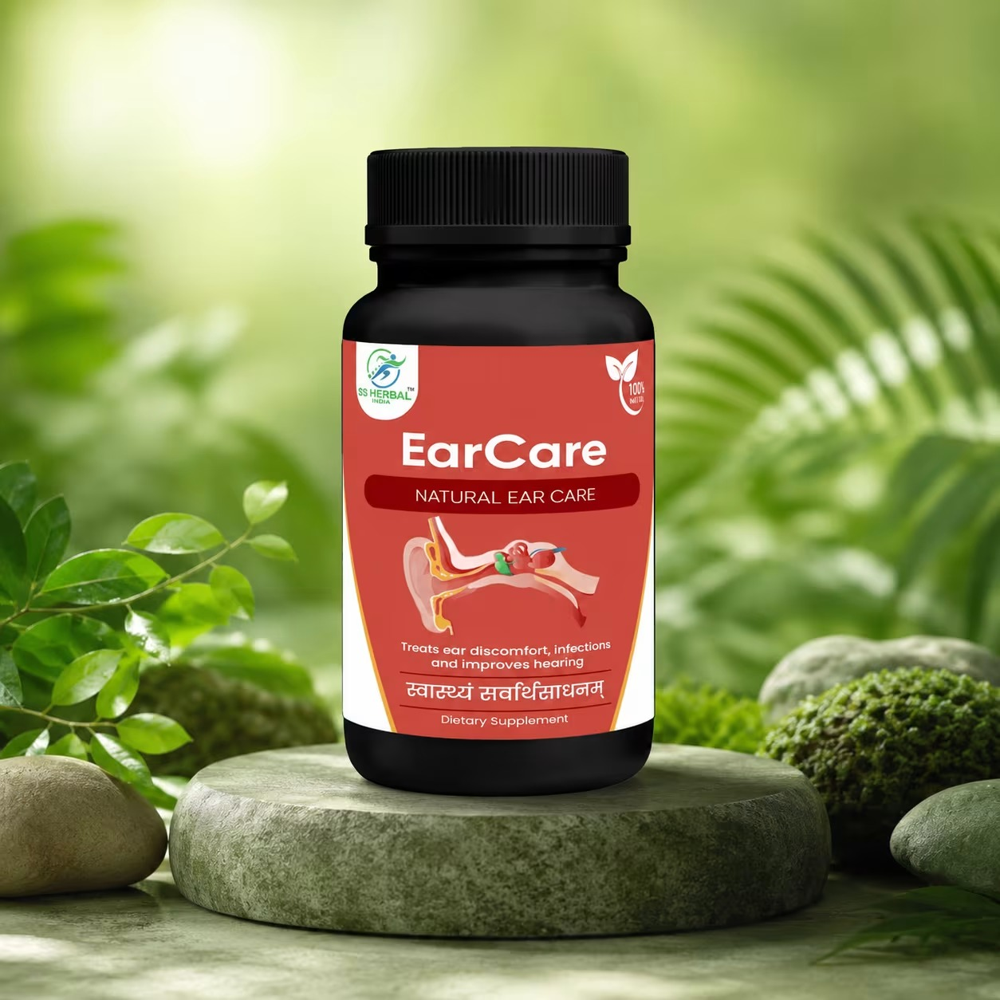

क्या आप भी कानों की इन परेशानियों से जूझ रहे हैं?
.jpg)
.jpg)
.jpg)
.jpg)
.jpg)
पेश है EarCare – कानों की देखभाल के लिए Ayurvedic Herbal Formula
पारंपरिक Ayurvedic Formulation

आसान Powder Format
सुविधाजनक उपयोग
EarCare एक Ayurvedic herbal powder है, जिसे पारंपरिक आयुर्वेदिक पद्धति के अनुसार तैयार किया गया है।
How EarCare Works कानों की रोज़मर्रा की देखभाल के लिए चार सरल चरण
Natural Herbal Nourishment
.jpg)
पारंपरिक Ayurvedic herbs से तैयार formulation, जो daily ear care routine का हिस्सा बन सकता है।
Everyday Ear Care
.jpg)
EarCare को अपनी नियमित देखभाल की routine में शामिल किया जा सकता है।
Healthy Hearing Support
.jpg)
कानों की सामान्य देखभाल और healthy hearing habits को प्राथमिकता देने के लिए।
Overall Ear Care
.jpg)
नियमित देखभाल और सही आदतों के साथ कानों की सेहत का ध्यान रखें।
प्रकृति से चुनी गई पारंपरिक Ayurvedic जड़ी-बूटियाँ
EarCare में शामिल हैं पारंपरिक रूप से इस्तेमाल की जाने वाली herbal ingredients:
.jpg)
गुणवत्ता और सामग्री की जानकारी में पारदर्शिता
स्वाइप करके सभी मानक देखें →

GMP

ISO

FSSAI

Quality Testing
कान से पानी या मवाद आना
और सुनाई कम देना –
इसे नज़रअंदाज़ न करें!
किसी medical condition का संकेत हो सकता है।

इसलिए सबसे पहले कानों की जाँच कराएँ और qualified healthcare professional की सलाह लें।
EarCare के बारे में अधिक जानकारी प्राप्त करें
अपनी जानकारी भरें और हमारी टीम से product details एवं ordering information प्राप्त करें।
EarCare
ग्राहकों के अनुभव
"कानों की देखभाल के लिए EarCare एक बहुत ही आसान और पारंपरिक आयुर्वेदिक उपाय है। Daily routine में इसे शामिल करने के बाद मुझे काफी अच्छा महसूस हुआ। हर्बल सामग्री की शुद्धता पर पूरा भरोसा है।"
पूजा शर्मा
"पारंपरिक आयुर्वेदिक जड़ी-बूटियों से बना होने के कारण EarCare पर भरोसा करना आसान है। नियमित इस्तेमाल से कानों की सामान्य देखभाल और रूटीन में बहुत मदद मिली है। बहुत ही बढ़िया प्रोडक्ट है।"
दीपक कुमार
"EarCare का powder format इस्तेमाल करने में बेहद सुविधाजनक है। गुणवत्ता और सामग्री की जानकारी में पारदर्शिता देखकर मुझे यह बहुत पसंद आया। हर किसी को इसे अपनी केयर रूटीन में रखना चाहिए।"
अजय भाल
EarCare से जुड़े आपके सवालों के जवाब
EarCare एक Ayurvedic herbal powder है, जिसमें Neem, Giloy, Brahmi, Turmeric, Garlic, Tulsi, Bilva और अन्य पारंपरिक herbal ingredients शामिल हैं।
नहीं। EarCare को कान से पानी या मवाद आने के इलाज के रूप में प्रस्तुत नहीं किया जाना चाहिए। ऐसे लक्षण infection या अन्य medical condition का संकेत हो सकते हैं। डॉक्टर से जाँच कराएँ।
EarCare को hearing loss या सुनने की क्षमता में सुधार के प्रमाणित उपचार के रूप में प्रस्तुत नहीं किया जाना चाहिए। सुनने में परेशानी होने पर ENT specialist से सलाह लें।
नहीं। EarCare tinnitus का प्रमाणित इलाज नहीं है। लगातार घंटी या सीटी जैसी आवाज़ आने पर चिकित्सकीय जाँच कराएँ।
इसमें Neem, Giloy, Brahmi, Turmeric, Garlic, Tulsi, Bilva और अन्य herbal ingredients शामिल हैं। पूरी ingredient list product label पर देखें।
Product का उपयोग केवल उसके label पर दिए गए निर्देशों के अनुसार करें। इसके उपयोग के तरीके या मात्रा को लेकर संदेह होने पर qualified healthcare professional से सलाह लें।
किसी भी herbal product से कुछ लोगों को एलर्जी या अन्य प्रतिकूल प्रतिक्रिया हो सकती है। Product label पढ़ें और किसी परेशानी की स्थिति में उपयोग बंद करके चिकित्सकीय सलाह लें।
कान में कोई तेल, पाउडर, घरेलू पदार्थ या अन्य वस्तु न डालें। कान को सूखा रखें और जल्द से जल्द ENT specialist से जाँच कराएँ।
Disclaimer
EarCare एक Ayurvedic herbal product है। इसे किसी भी कान संबंधी बीमारी, infection, hearing loss, tinnitus या अन्य medical condition के diagnosis, treatment या cure के रूप में प्रस्तुत नहीं किया जाता। यह डॉक्टर की जाँच और सलाह का विकल्प नहीं है। कान से मवाद या पानी आना, सुनाई कम देना, दर्द या लगातार आवाज़ गूंजना जैसे लक्षण होने पर qualified healthcare professional से जाँच कराएँ। Product का उपयोग label पर दिए गए निर्देशों के अनुसार करें।